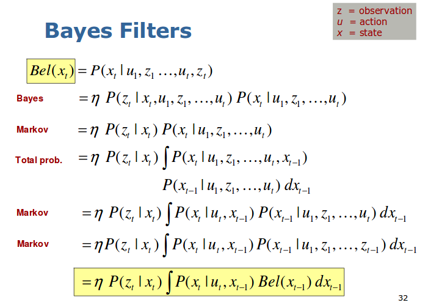
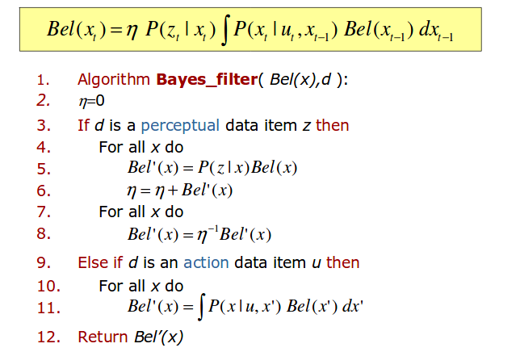

SLAM位姿与地图估计问题有两种方式，一种是滤波，一种是优化.
暂时搜集到的一些信息，没有自己整理
Bayes Filter推导(基于Bayes公式与Markov assumption)

第一步用到的Bayes公式：
$$P(x|y,z) = \frac{P(y|x,z)\cdot p(x|z)}{p(y|z)}$$
由此得出，贝叶斯滤波器分为两步：
1. 状态预测，基于状态转移模型：
$$\overline {bel} ({x_t}) = \int {p({x_t}|{u_t},{x_{t - 1}})} \;bel({x_{t - 1}})\;d{x_{t - 1}}$$
2. 状态更新，基于新的观测
$$bel({x_t}) = \;\eta \,p({z_t}|{x_t})\,\overline {bel} ({x_t})$$
在此式中\(\eta\)未进一步说明，概率机器人一书中，被称之为归一化因子，具体表现形式如下：
$$\frac{1}{\eta} = \sum{p(z_t|x_t)\overline{bel}(x_t)dx_t}$$
因为最后\(bel(x_t)\)是一个概率，其所有\(x_t\)可能性概率的总和必须为１.
伪代码流程如下:

同时，我们注意，我们的目的是计算\(x_t\)的后验概率，如果\(bel(x_t)\)是任意分布， 我们需要在\(x_t\)的所有可能取值点上，计算该取值的概率，这在计算上是难于实现的。
相关资料的搜集:
Bayes Filter by Cyrill Stachniss
Introduction to Mobile Robotics - Bayes Filter – Kalman Filter
SLAM中的EKF，UKF，PF原理简介
SLAM笔记三——贝叶斯滤波器
SLAM学习笔记2：Kalman Filter(卡尔曼滤波) 与Least Square(最小二乘法) 的比较
细说贝叶斯滤波：Bayes filters
细说Kalman滤波：The Kalman Filter